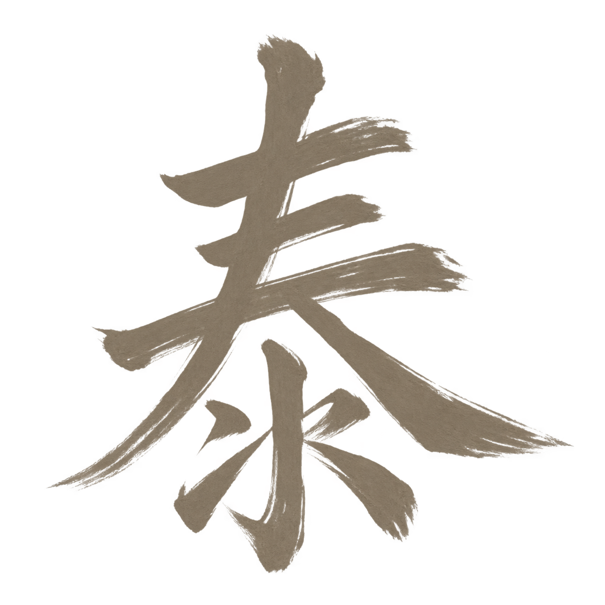
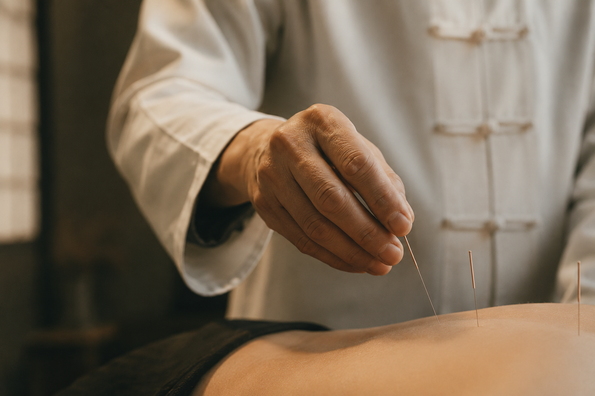
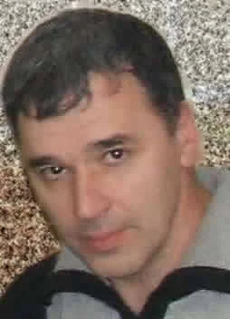

Тайшань
Когда важно
увидеть
человека целиком,
а не отдельный симптом.
Современный центр китайской медицины в Воронеже.
Работаем с 2012 года.

Тайшань
Китайская традиция.
Российская медицинская практика.
Мы соединяем знания традиционной китайской медицины с внимательной современной медицинской практикой. Каждый пациент для нас — это уникальная история, требующая индивидуального подхода и бережного отношения.
с 2012 года
работает медицинский центр
20+ лет
практический опыт специалистов
обучение в КНР
подготовка по традиционной китайской медицине
Медицинская деятельность центра осуществляется на основании лицензии.
Для каждого пациента разрабатываем индивидуальную программу лечения.
Наш подход
Сначала человек,
потом метод
Мы рассматриваем не отдельный симптом, а состояние организма в целом: его причины, связи и ресурсы.
Только после этого врач подбирает методы и составляет индивидуальную программу лечения.
Жалобы
Обследования
и диагностика
Оценка состояния
организма
Динамика
и контроль
Индивидуальная
программа
Мы рядом на каждом этапе
Методы центра
Традиционные
методы, проверенные
временем
Мы используем проверенные методы китайской медицины в сочетании с современными диагностическими подходами.
Комплексный подход позволяет воздействовать на причины нарушений и восстанавливать баланс в организме.
01Рефлексотерапия
02
03
04
05
Рефлексотерапия
(иглоукалывание)
Воздействие на активные точки для восстановления баланса и запуска естественных процессов саморегуляции.
Мануальная терапия
Коррекция нарушений опорно-двигательного аппарата, работа с мышцами и суставами.
Массаж
Лечебный массаж для улучшения кровообращения, снятия напряжения и восстановления функций организма.
Фитотерапия
Индивидуальный подбор лекарственных трав и сборов для внутреннего и наружного применения.
Дополнительные методы
Баночный массаж, прогревания, моксотерапия и другие методы традиционной китайской медицины.
Индивидуальная
программа лечения
для каждого пациентаУчитываем
всё
Ваше состояние, образ жизни, возраст, сезон и другие факторы.
Воздействуем
на причину
Работаем не только с симптомами, а с их источником.
Восстанавливаем
баланс
Помогаем организму вернуться в состояние гармонии и здоровья.
Сопровождаем
на каждом этапе
Контролируем динамику и корректируем программу при необходимости.
С чем обращаются
Когда организму
нужно вернуть
равновесие
Врач рассматривает состояние с позиции китайской медицины и учитывает данные современной диагностики. Очная оценка обязательна.
Боли в спине, шее
и суставах
Состояния, при которых обращаются к рефлексотерапии и мануальной терапии.
Неврологические
состояния
Наблюдение и поддержка в рамках лицензированного направления «неврология».
Головные боли
и нарушения сна
Направления обращения, требующие очной оценки и наблюдения в динамике.
Восстановление
и высокая нагрузка
Поддержка при переутомлении и после перенесённых состояний.

Команда
Традиция работает
только в руках
врача
Андрей Нариманович Байрамов практикует китайскую медицину с 1983 года. Проходил длительное обучение в Чунцине и по программе Учебного центра Пекинской академии традиционной китайской медицины.
В центре также ведут приём специалисты по рефлексотерапии, мануальной терапии и неврологии.
Все врачи центра40+лет врачебной
практики
практики
Знания традиции становятся медицинской помощью только в руках подготовленного врача
Первый приём
Согласуем время,
когда удобно вам
Большинство врачей принимают в будни. Вечерние часы и суббота возможны по предварительной договорённости.
Запись по телефону+7 952 956-31-86+7 473 256-31-86По телефону мы записываем на приём, но не проводим медицинские консультации.Позвонить и записаться
Адрес
Воронеж,
ул. Красных Зорь, 38
Телефоны+7 952 956-31-86+7 473 256-31-86
Почтаekomarov@mail.ru
Приём
По предварительной записи.
Консультации по телефону не проводятся.